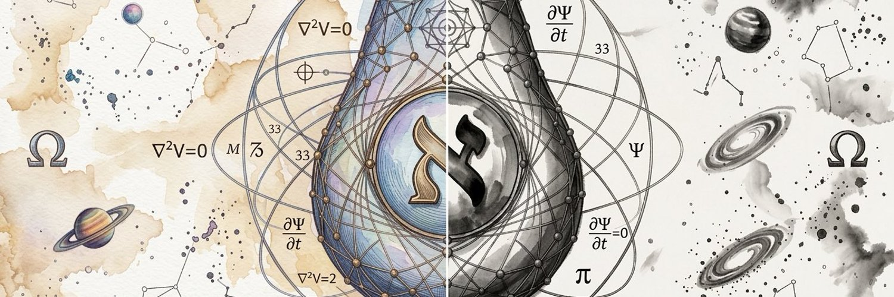

01Work
重构工作：业务自动化工厂
AI 不只是增强单个工具，而是把复杂知识工作重构成可编排、可复用、可评估的生产系统。

01 / Historical Blind Zone
把 AI 当做生产力工具，可能是最浪费、也最遗憾的认知局限。它真正的潜力，是文明级别的范式重构者。
更强工具已经被验证。但如果 AI 真的是一种新智能形态，它带来的变化可能会继续向三个层面展开：
AI 不只是增强单个工具，而是把复杂知识工作重构成可编排、可复用、可评估的生产系统。
Agent 不只是等待指令的助理，而是共享上下文、保持记忆、长期在场的人类认知延展。
当 Agent 真正成为外脑，它也许会进一步放大人类理解、创造、记忆和表达的能力。
02 / Automation Factory
Agent 带来的变化，不只是多几个执行者，而是知识工作的生产条件变了：信息可以被保留，协作可以异步，审计可以自动化，产线可以持续进化。
摘要不再是终点，而是索引；任何压缩后的信息，都应该能回到原始材料。
按目标、状态、上下文、工具能力、风险等级和验证路径来组织，而不是简单模仿人类部门。
用目标、约束、检查点和证据链减轻人的审计负担，同时保持产出可控。
质量不应只依赖“模型这次表现不错”，而要经过规则、测试、工具返回值、权限边界和最终验收。
失败案例、审计结果、用户反馈和优秀流程，都应该变成下一次工作的默认能力。
03 / Always-present External Brain
个人 Agent 不应该只是助理、员工，或者另一个与你二元对立的主体。它应该是你的认知和执行器官延伸：一直在场，与你共享上下文，协同思考，并在合适的时候主动出现和行动。
不是一轮一轮的对话，也不是每次都等任务触发，而是 realtime 一直都在。给出反应和保持沉默，都是 Agent 的选择。
尽量减少人到 Agent 之间的信息搬运；raw data 应该在授权和边界内由 Agent 自动获取。
设备日志、软件状态、环境信息、穿戴设备里的生理信息，都可以成为 Agent 的感知输入。
好的个人 Agent，不只是替人解释世界，而是帮助人看见自己正在经历什么。
Current Probe
Lume 是我对“外脑式 Agent 产品表面”的下一阶段探索：如果 Agent 要长期在场，它应该如何被看见、被唤起、被信任，又如何在不打扰人的情况下持续提供帮助？
04 / Far Fields
这些远方不需要在首页被证明。它们只说明一件事：我做 Agent，不只是为了提高效率，也是在追逐更长期的人类能力扩展。
搜索的不是词，也不只是语义相似度，而是想法之间的结构关系。
它不只是翻译术语，而是翻译思维方式：把一个领域的推理链，重新表述成另一个领域可以消化的认知框架，同时保持逻辑结构不变。
让普通人也能把模糊念头一路变成作品、产品、组织、实验或生活系统。
它陪一个想法跨过表达、设计、执行、反馈和迭代，直到它从脑海里的模糊念头变成可被别人体验的东西。
把事实、机制、争论、证据边界和验证路径组织成可追问、可校验的理解网络。
让人不只从压缩过的历史结论里学习，而是能重新追问过程、边界、隐含前提和局部经验。
创造一种比语言更高维、但仍有边界感的表达媒介。
不是读心术，而是一种安全的外化空间：让人的内在状态可以被呈现、调整、分享和重新理解。
05 / Harness Atlas
Agent Harness 不是几个工具，而是一张从 core loop 到真实 workflow、再到外脑系统的能力地图。它不是成熟产品清单，而是持续展开的实验空间。
这张图的价值不在于每个节点都已经成熟，而在于把 Agent 从模型调用到真实系统、再到外脑形态的空间摊开。
06 / Keep Asking
如果你也在思考 Agent 如何从模型能力走向真实系统、自动化工作流和人类外脑，我很愿意交流。
我尤其关心 Agent runtime、Harness、memory、workflow integration、automated audit、external brain，以及 fintech / investment agents。